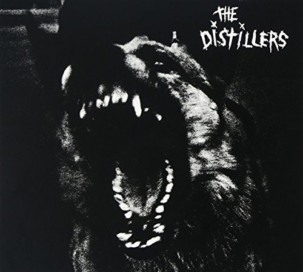

ＴＨＥ ＤＩＳＴＩＬＬＥＲＳ
RANCID
のティムの元妻が参加しているバンド。

●タイトル
The Distillers
●コメント
HELLCAT RECORDSのガレージパンクバンドの1STアルバム。
RANCID
のTIMの元妻であるブロディがボーカルです！ すんげーかっちょいい声してます！女性ボーカルは
VICE SQUAD
のBEKI ってイメージがずっとあったけど、負けず劣らずこりゃかっこいーっすわ！
試聴する